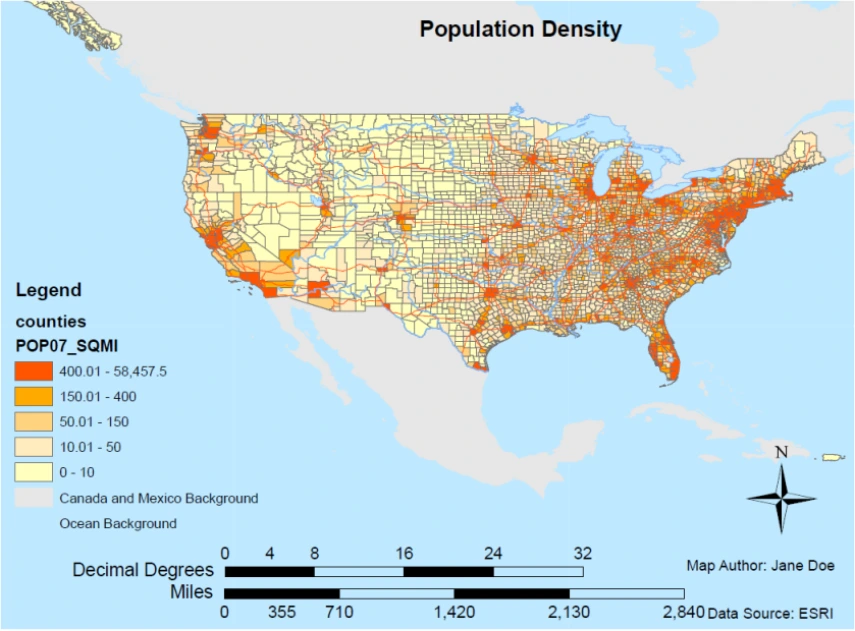
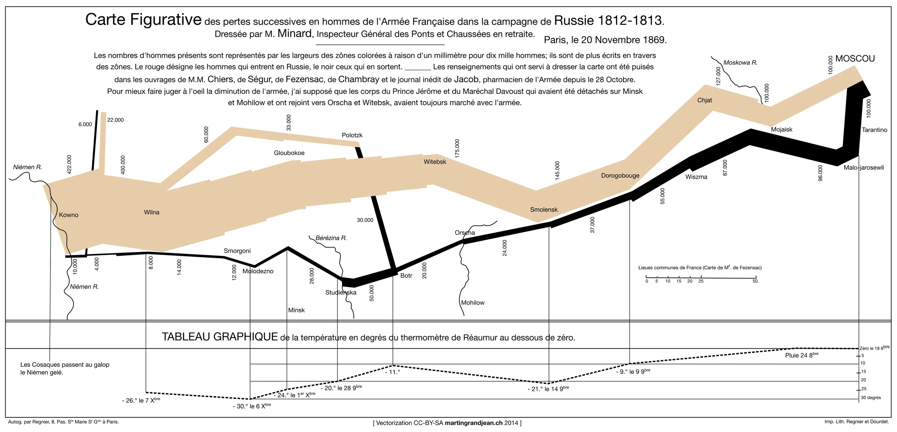
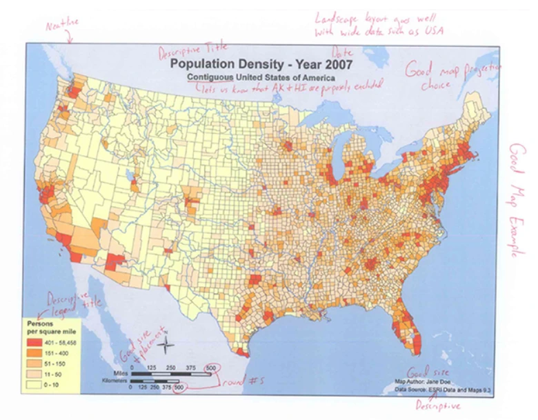

Pertemuan 3 · 100 menit
Komunikasi kartografis
Memahami peta sebagai media komunikasi: bagaimana pembuat peta memilih dan menyandikan informasi, lalu bagaimana pembaca menafsirkan simbol dan pola yang ditampilkan.
1. Tujuan pembelajaran
Setelah pertemuan ini, mahasiswa diharapkan mampu menjelaskan proses komunikasi informasi melalui peta dan menganalisis unsur komunikasi pada contoh peta.
2. Peta sebagai media komunikasi
Dunia / data
→
Pembuat peta
→
Peta
→
Pembaca
Pembuat peta memilih data dan mengubahnya menjadi simbol. Pembaca melihat simbol tersebut lalu membentuk pemahaman tentang fenomena yang dipetakan.
Komunikasi berhasil jika pembaca memahami informasi utama sesuai tujuan peta tanpa salah menafsirkan simbol atau tampilan.
3. Pertimbangan dalam pembuatan peta
- Tujuan Apa pesan utama yang ingin disampaikan?
- Pembaca Siapa yang akan menggunakan peta? Pengetahuan dan kebutuhannya bisa berbeda.
- Data Data mana yang relevan dan cukup terpercaya untuk tujuan tersebut?
- Simbol Bagaimana data diubah menjadi tanda, garis, area, ukuran, atau warna?
- Hierarki Informasi mana yang harus terlihat lebih dahulu?
- Konteks Legenda, skala, sumber, dan informasi lain apa yang dibutuhkan pembaca?
4. Proses pembacaan peta
Pembaca tidak melihat data mentah. Pembaca melihat hasil pilihan kartografis. Karena itu, simbol, warna, ukuran tulisan, dan susunan elemen memengaruhi informasi apa yang terlihat paling penting.
Urutan sederhana membaca peta
1 Judul
→
2 Wilayah
→
3 Legenda
→
4 Pola utama
→
5 Sumber & konteks
5. Contoh komunikasi yang kuat: peta Minard

Peta ini menggabungkan lokasi, arah pergerakan, jumlah pasukan, dan informasi suhu. Ketebalan garis berubah sesuai jumlah, sehingga pembaca dapat melihat perubahan secara langsung tanpa membaca tabel angka terlebih dahulu.
Pelajaran: simbol tidak hanya menunjukkan lokasi. Bentuk, ukuran, arah, dan warna dapat dipakai untuk menyampaikan beberapa aspek informasi secara bersamaan.
6. Hambatan komunikasi kartografis
- Judul terlalu umum sehingga tujuan peta tidak jelas.
- Legenda tidak menjelaskan simbol atau satuan.
- Terlalu banyak informasi sehingga tema utama tenggelam.
- Warna atau simbol sulit dibedakan.
- Sumber dan waktu data tidak jelas.
- Peta menampilkan sesuatu yang tidak sesuai dengan tujuan atau pembacanya.

7. Pengguna, tujuan, dan konteks
| Pengguna | Kebutuhan utama | Implikasi desain |
|---|---|---|
| Masyarakat umum | Makna cepat dan istilah yang mudah dipahami | Legenda ringkas, simbol umum, teks cukup besar |
| Pengambil keputusan | Perbandingan, prioritas, dan keterbatasan data | Pesan utama kuat; sumber, tahun, dan ketidakpastian jelas |
| Tenaga teknis | Nilai rinci dan ketelitian posisi | Koordinat, skala, metode, dan metadata lebih lengkap |
| Pengguna lapangan | Orientasi dalam kondisi terbatas | Kontras tinggi, simbol kuat, media praktis |
Desain yang efektif selalu bergantung pada tugas. Peta untuk mencari rute tidak dirancang sama dengan peta untuk membandingkan tingkat risiko antarwilayah.
8. Gangguan dalam komunikasi kartografis
- DataData tidak lengkap, terlalu lama, atau menggunakan satuan yang tidak setara.
- PengkodeanSimbol tidak sesuai dengan sifat data atau terlalu banyak kelas.
- TampilanKontras lemah, label bertumpuk, dan hierarki tidak jelas.
- MediaPeta diperkecil, gambar beresolusi rendah, atau tampilan ponsel tidak diperhitungkan.
- PenafsiranHubungan spasial dianggap sebagai hubungan sebab-akibat tanpa bukti tambahan.
Peta yang terbaca belum tentu menghasilkan kesimpulan yang benar.Kesimpulan harus dibatasi oleh jenis data, skala, waktu, metode, dan informasi yang benar-benar ditampilkan.
9. Evaluasi keberhasilan komunikasi
Temukan pesanInformasi utama dikenali tanpa penjelasan tambahan.
Baca simbolLegenda dan simbol menghasilkan arti yang sama.
Cari polaPerbedaan, urutan, atau besaran dapat dibandingkan.
Uji kesimpulanKesimpulan didukung oleh data pada peta.
Periksa batasSumber, tahun, skala, dan ketidakpastian diketahui.
10. Sumber pembelajaran
11. Ringkasan
- Peta adalah media komunikasi antara pembuat peta dan pembaca.
- Pembuat peta memilih data, simbol, dan susunan sesuai tujuan dan pembaca.
- Komunikasi dapat gagal jika simbol, legenda, hierarki, atau konteks tidak jelas.
- Desain yang baik membantu informasi utama terlihat dan ditafsirkan dengan benar.